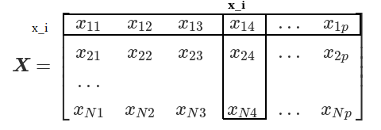

Supervised learning is when we have a set of inputs (a.k.a. predictors, independent variables, and features) which influence an output(a.k.a. response and dependant variables.)
There are several types of variables in statistical learning. The first kind is quantitative which basically means we’re looking at something numerical like stock prices or weight. Another kind is qualitative. Here we’re trying to predict something like "what kind of flower is this" or we’re looking at "what race is this person." More formally, we’re just looking at a certain set of things like {White, Hispanic, ...}. Something to note is that these sets of things isn’t ordered. Ordered categorical variables are qualitative variables that are ordered like {Small, Medium, Large}. We usually call predicting quantitative variables regression and qualitative variables classification. Qualitative variables can be represented in various ways. For things that are binary in nature (like dead/alive) we can use 0/1. If we have more than two categories, it’s common to use dummy variables. These are basically binary strings were each bit corresponds to a category. For example lets imagine we were trying to classify between four kinds of ice cream, Chocolate, Vanilla, Strawberry, and Brown. The output of our model would be a 4-bit string where the first bit corresponds to chocolate, the second bit corresponds to vanilla, and so on. Therefore if the model outputs 1000 then the model has decided that our inputs describe chocolate ice-cream. If the model output 0001 then the inputs describe Brown ice-cream.
In this book, quantitative output will be represented by \(Y\) and qualitative outputs will be represented by \(G\). Input variables will be denoted by \(X\). If \(X\) is a vector we can denote it’s elements through subscripts \(X_k\). If our input consists of N vectors of size p which we’ll denote as \(x_0, x_1, x_2,...\) then \(\boldsymbol{X}\) would be a \(N\times p\) matrix. We’ll denote vectors of N elements as bold. This’ll help us differentiate between when we’re talking about one of the p-vectors \(x_j\) and when we’re talking about all the observed values, \(\boldsymbol{x_j}\) on the input variable \(X_j\).

07-15-2019: began chapter 2
Think you found a mistake? You probably did. Let me know at hi@delonshen.com if you want.